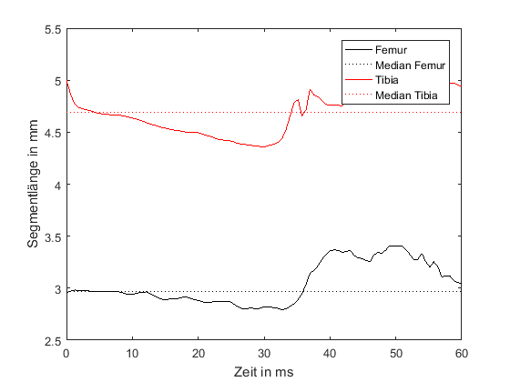

Contents
clear all; close all; clc ID = '12110115'; t1 = 76; t2 = 136; t = linspace(0,t2-t1,100) save([ID,'/t.csv'],'t','-ascii','-tabs')
t =
Columns 1 through 7
0 0.6061 1.2121 1.8182 2.4242 3.0303 3.6364
Columns 8 through 14
4.2424 4.8485 5.4545 6.0606 6.6667 7.2727 7.8788
Columns 15 through 21
8.4848 9.0909 9.6970 10.3030 10.9091 11.5152 12.1212
Columns 22 through 28
12.7273 13.3333 13.9394 14.5455 15.1515 15.7576 16.3636
Columns 29 through 35
16.9697 17.5758 18.1818 18.7879 19.3939 20.0000 20.6061
Columns 36 through 42
21.2121 21.8182 22.4242 23.0303 23.6364 24.2424 24.8485
Columns 43 through 49
25.4545 26.0606 26.6667 27.2727 27.8788 28.4848 29.0909
Columns 50 through 56
29.6970 30.3030 30.9091 31.5152 32.1212 32.7273 33.3333
Columns 57 through 63
33.9394 34.5455 35.1515 35.7576 36.3636 36.9697 37.5758
Columns 64 through 70
38.1818 38.7879 39.3939 40.0000 40.6061 41.2121 41.8182
Columns 71 through 77
42.4242 43.0303 43.6364 44.2424 44.8485 45.4545 46.0606
Columns 78 through 84
46.6667 47.2727 47.8788 48.4848 49.0909 49.6970 50.3030
Columns 85 through 91
50.9091 51.5152 52.1212 52.7273 53.3333 53.9394 54.5455
Columns 92 through 98
55.1515 55.7576 56.3636 56.9697 57.5758 58.1818 58.7879
Columns 99 through 100
59.3939 60.0000
Importiere Kinematikdaten
markers = {'r11','r12','r15'};
for k = 1:3
clear Rxy Rxz r
Rxy = impHedrickLab(ID,ID,markers{k},'txt');
Rxz = impHedrickLab(ID,ID,[markers{k},'z'],'txt');
r = [Rxy, Rxz(:,2)];
r = interp1_xn(r(t1:t2,:),100);
save([ID,'/r',num2str(k),'.csv'],'r','-ascii','-tabs')
end
Importiere Kraftdaten
f.raw = dlmread([ID,'/',ID,'.csv'],','); n.f = length(f.raw); for l = 1:3 % fastsmooth(S(:,ll),7) % medfilt1(S(:,ll),7) f.smooth(:,l) = sgolayfilt(f.raw(:,l),0,5); end
Offset bestimmen und linearen Drift abschätzen
n.offset = [21:120]; f.Offset1 = mean(f.smooth(n.offset,:)); % Messbegin f.Offset2 = mean(f.smooth(end-fliplr(n.offset),:)); % Messende f.Offset = mean([f.Offset1;f.Offset2]); f.Drift = f.Offset1 - f.Offset2; % Drift Anfang Ende Messung
Nullen
f.zero = f.smooth - repmat(f.Offset,n.f,1); % Synchronisierung Kinematik und Kraft n.k = length(Rxy); % Kinematik frames cut.f1f2 = [t1:t2] cut.f1f2 = round(n.f - (n.k - cut.f1f2).* 1200./500); cut.f1f2 = [cut.f1f2(1):cut.f1f2(end)]; % Schneiden f.cut = f.zero(cut.f1f2,:); F = interp1_xn(f.cut,100);
cut =
struct with fields:
f1f2: [1×61 double]
save([ID,'/F3.csv'],'F','-ascii','-tabs')
Messdaten Importieren
clear all; close all ID = '12110115'; % Messnummer
Zeit
t = dlmread([ID,'/t.csv']);
Kinematikdaten in mm
CoFeJ = dlmread([ID,'/r1.csv']); % Coxa-Femur Gelenk FeTiJ = dlmread([ID,'/r2.csv']); % Femur-Tibia Gelenk TaGrJ = dlmread([ID,'/r3.csv']); % Tarsenspitze
Kraftmessdaten (hier ohne Einheit)
bekannt unter z.B. - Reaktions-Kraft (reaction force), - Boden-Kraft (ground force) - Boden-Reaktions-Kraft (ground reaction force)
F_TaGrJ = dlmread([ID,'/F3.csv']);
Kontrolliere importierte Daten
plot(t,F_TaGrJ,'g',t,CoFeJ,'k',t,FeTiJ,'b',t,TaGrJ,'r') xlabel('Zeit in ms') ylabel('Kraft und Ort (hier ohne Einheit)') legend('F_{TaGrJ}','','','CoFeJ','','','FeTiJ','','','TaGrJ','','') grid on
Vektoren der Segmente
% Segment-Vektoren (gemessen) Fe = FeTiJ - CoFeJ; % Femur Vektor Ti = TaGrJ - FeTiJ; % Tibia Vektor % Segment-Laengen (gemessen) FeN = sqrt(sum(Fe .* Fe,2)); TiN = sqrt(sum(Ti .* Ti,2)); % Mittlere Segment-Laengen (z.B. Median, Idealisierung) FeMD = median(FeN); TiMD = median(TiN); % Kontrolle plot(t,FeN,'k',t,repmat(FeMD,100,1),':k',... t,TiN,'r',t,repmat(TiMD,100,1),':r') xlabel('Zeit in ms') ylabel('Segmentlänge in mm') legend('Femur','Median Femur','Tibia','Median Tibia')
Femur-Tibia Ebene
- "axiale" Einheitsvektoren der Segmente (x-Achse im Femur-Koordinaten-System)
eFeX = Fe./repmat(FeN,1,3);
% (x-Achse im Tibia-Koordinaten-System)
eTiX = Ti./repmat(TiN,1,3);
senkrechte Einheitsvektoren der Segmente
- "cranio-caudal" Normalen-Einheitsvektor der Femur-Tibia-Ebene (z-Achse im Femur- und im Tibia-Koordinaten-System)
tmp = cross(eFeX,eTiX); eFeTiZ = tmp./repmat(sqrt(sum(tmp.^2,2)),1,3); % - "ventral-dorsal" % (y-Achse im Femur-Koordinaten-System) tmp = []; tmp = cross(eFeTiZ,eFeX); eFeY = tmp./repmat(sqrt(sum(tmp.^2,2)),1,3) % (y-Achse im Tibia-Koordinaten-System) tmp = []; tmp = cross(eFeTiZ,eTiX); eTiY = tmp./repmat(sqrt(sum(tmp.^2,2)),1,3)
eFeY =
-0.1119 -0.1101 -0.9876
-0.0752 -0.1255 -0.9892
-0.0579 -0.1343 -0.9892
-0.0757 -0.1299 -0.9886
-0.0967 -0.1246 -0.9875
-0.1189 -0.1190 -0.9858
-0.1410 -0.1218 -0.9825
-0.1599 -0.1208 -0.9797
-0.1740 -0.1158 -0.9779
-0.1868 -0.1156 -0.9756
-0.1978 -0.1159 -0.9734
-0.1986 -0.1127 -0.9736
-0.1990 -0.1074 -0.9741
-0.1990 -0.1001 -0.9749
-0.1967 -0.0966 -0.9757
-0.1934 -0.0934 -0.9767
-0.1894 -0.0879 -0.9780
-0.1822 -0.0816 -0.9799
-0.1719 -0.0745 -0.9823
-0.1630 -0.0693 -0.9842
-0.1534 -0.0640 -0.9861
-0.1408 -0.0569 -0.9884
-0.1289 -0.0505 -0.9904
-0.1176 -0.0446 -0.9921
-0.1085 -0.0395 -0.9933
-0.1002 -0.0349 -0.9944
-0.0942 -0.0315 -0.9951
-0.0893 -0.0275 -0.9956
-0.0850 -0.0229 -0.9961
-0.0773 -0.0209 -0.9968
-0.0697 -0.0183 -0.9974
-0.0628 -0.0140 -0.9979
-0.0546 -0.0106 -0.9985
-0.0455 -0.0077 -0.9989
-0.0311 -0.0096 -0.9995
-0.0170 -0.0098 -0.9998
-0.0038 -0.0065 -1.0000
0.0113 -0.0063 -0.9999
0.0271 -0.0073 -0.9996
0.0366 -0.0034 -0.9993
0.0477 0.0007 -0.9989
0.0609 0.0050 -0.9981
0.0742 0.0057 -0.9972
0.0871 0.0059 -0.9962
0.0941 0.0144 -0.9955
0.1017 0.0219 -0.9946
0.1102 0.0283 -0.9935
0.1182 0.0390 -0.9922
0.1264 0.0503 -0.9907
0.1355 0.0589 -0.9890
0.1415 0.0749 -0.9871
0.1443 0.0982 -0.9847
0.1481 0.1222 -0.9814
0.1521 0.1471 -0.9774
0.1535 0.1756 -0.9724
0.1477 0.2163 -0.9651
0.1361 0.2660 -0.9543
0.1062 0.3374 -0.9353
0.0718 0.4031 -0.9123
0.0203 0.4468 -0.8944
-0.0354 0.4772 -0.8781
-0.0894 0.4989 -0.8621
-0.1305 0.5374 -0.8332
-0.1767 0.5658 -0.8054
-0.2402 0.5683 -0.7870
-0.2967 0.5582 -0.7748
-0.3487 0.5412 -0.7652
-0.3967 0.5326 -0.7476
-0.4385 0.5187 -0.7340
-0.4693 0.4962 -0.7304
-0.5093 0.4781 -0.7156
-0.5515 0.4609 -0.6953
-0.5870 0.4341 -0.6833
-0.6185 0.4095 -0.6707
-0.6442 0.3886 -0.6588
-0.6645 0.3754 -0.6461
-0.6820 0.3631 -0.6349
-0.6916 0.3362 -0.6392
-0.7023 0.3145 -0.6386
-0.7139 0.2998 -0.6329
-0.7062 0.2807 -0.6500
-0.6940 0.2601 -0.6713
-0.6837 0.2379 -0.6899
-0.6722 0.2079 -0.7106
-0.6594 0.1695 -0.7324
-0.6408 0.1638 -0.7500
-0.6223 0.1637 -0.7655
-0.6109 0.1642 -0.7745
-0.5905 0.1535 -0.7923
-0.5629 0.1340 -0.8156
-0.5277 0.1075 -0.8426
-0.4914 0.0846 -0.8668
-0.4619 0.0826 -0.8831
-0.4302 0.0689 -0.9001
-0.3949 0.0453 -0.9176
-0.3617 0.0413 -0.9314
-0.3293 0.0364 -0.9435
-0.2973 0.0261 -0.9544
-0.2548 0.0176 -0.9668
-0.2061 0.0100 -0.9785
eTiY =
0.7148 -0.2863 -0.6380
0.7150 -0.3008 -0.6311
0.7182 -0.3126 -0.6217
0.7269 -0.3196 -0.6079
0.7354 -0.3276 -0.5932
0.7433 -0.3365 -0.5782
0.7457 -0.3558 -0.5633
0.7496 -0.3706 -0.5484
0.7555 -0.3798 -0.5338
0.7606 -0.3937 -0.5162
0.7655 -0.4080 -0.4975
0.7728 -0.4158 -0.4795
0.7809 -0.4212 -0.4614
0.7900 -0.4238 -0.4430
0.7963 -0.4323 -0.4231
0.8017 -0.4413 -0.4032
0.8084 -0.4445 -0.3858
0.8161 -0.4470 -0.3663
0.8246 -0.4486 -0.3447
0.8298 -0.4529 -0.3262
0.8345 -0.4565 -0.3084
0.8408 -0.4558 -0.2922
0.8449 -0.4580 -0.2762
0.8473 -0.4629 -0.2604
0.8488 -0.4686 -0.2448
0.8495 -0.4758 -0.2281
0.8483 -0.4870 -0.2080
0.8463 -0.4982 -0.1885
0.8437 -0.5094 -0.1694
0.8390 -0.5226 -0.1515
0.8339 -0.5351 -0.1350
0.8287 -0.5463 -0.1214
0.8226 -0.5586 -0.1067
0.8156 -0.5714 -0.0914
0.8071 -0.5853 -0.0775
0.7997 -0.5970 -0.0634
0.7948 -0.6049 -0.0487
0.7877 -0.6151 -0.0343
0.7794 -0.6262 -0.0201
0.7687 -0.6396 -0.0061
0.7582 -0.6519 0.0085
0.7484 -0.6628 0.0241
0.7374 -0.6744 0.0377
0.7259 -0.6860 0.0508
0.7145 -0.6966 0.0654
0.7007 -0.7087 0.0824
0.6840 -0.7223 0.1021
0.6722 -0.7309 0.1181
0.6603 -0.7390 0.1334
0.6425 -0.7510 0.1521
0.6253 -0.7619 0.1691
0.6084 -0.7720 0.1841
0.5925 -0.7818 0.1941
0.5771 -0.7911 0.2026
0.5651 -0.7977 0.2105
0.5535 -0.8039 0.2175
0.5417 -0.8105 0.2230
0.5240 -0.8253 0.2107
0.5200 -0.8380 0.1655
0.5599 -0.8283 0.0229
0.5926 -0.7996 -0.0970
0.6171 -0.7631 -0.1918
0.6366 -0.7063 -0.3097
0.6478 -0.6434 -0.4079
0.6588 -0.5920 -0.4642
0.6572 -0.5410 -0.5247
0.6445 -0.4904 -0.5867
0.6179 -0.4618 -0.6363
0.5887 -0.4296 -0.6847
0.5557 -0.3915 -0.7334
0.5151 -0.3569 -0.7793
0.4702 -0.3251 -0.8205
0.4171 -0.2977 -0.8587
0.3647 -0.2720 -0.8905
0.3145 -0.2461 -0.9168
0.2883 -0.2341 -0.9285
0.2707 -0.2283 -0.9352
0.2548 -0.2403 -0.9367
0.2438 -0.2515 -0.9367
0.2385 -0.2610 -0.9354
0.2367 -0.2629 -0.9353
0.2372 -0.2662 -0.9343
0.2474 -0.2846 -0.9262
0.2541 -0.3060 -0.9175
0.2569 -0.3309 -0.9080
0.2656 -0.3389 -0.9025
0.2754 -0.3424 -0.8983
0.2854 -0.3405 -0.8959
0.2967 -0.3439 -0.8909
0.3094 -0.3517 -0.8835
0.3225 -0.3687 -0.8718
0.3431 -0.3861 -0.8563
0.3884 -0.4002 -0.8301
0.4169 -0.4172 -0.8075
0.4338 -0.4366 -0.7882
0.4651 -0.4424 -0.7668
0.4950 -0.4525 -0.7417
0.5200 -0.4750 -0.7099
0.5478 -0.4909 -0.6774
0.5773 -0.5025 -0.6436
subplot(2,3,1) plot3([r1(:,1) r2(:,1) r3(:,1)]', [r1(:,2) r2(:,2) r3(:,2)]', [r1(:,3) r2(:,3) r3(:,3)]') view(2) subplot(2,3,4)
Reference to a cleared variable r1. Error in index (line 133) plot3([r1(:,1) r2(:,1) r3(:,1)]', [r1(:,2) r2(:,2) r3(:,2)]', [r1(:,3) r2(:,3) r3(:,3)]')
plot([r1(:,1) r2(:,1)]',[r1(:,2) r2(:,2)]','k'); hold on plot([r2(:,1) r3(:,1)]',[r2(:,2) r3(:,2)]','r')